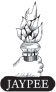
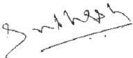

4 Jaypee Brothers Medical Publishers (P) Ltd.
Headquarters
Jaypee Brothers Medical Publishers (P) Ltd.
EMCA House, 23/23-B
Ansari Road, Daryaganj
New Delhi 110 002, India
Landline: +91-11-23272143, +91-11-23272703
+91-11-23282021, +91-11-23245672
Email: jaypee@jaypeebrothers.com
Corporate Office
Jaypee Brothers Medical Publishers (P) Ltd.
4838/24, Ansari Road, Daryaganj
New Delhi 110 002, India
Phone: +91-11-43574357
Fax: +91-11-43574314
Email: jaypee@jaypeebrothers.com
Overseas Office
J.P. Medical Ltd.
83 Victoria Street, London
SW1H 0HW (UK)
Phone: +44 20 3170 8910
Fax: +44 (0)20 3008 6180
Email: info@jpmedpub.com
Website: www.jaypeebrothers.com
Website: www.jaypeedigital.com
© 2025, Jaypee Brothers Medical Publishers
The views and opinions expressed in this book are solely those of the original contributor(s)/author(s) and do not necessarily represent those of editor(s) and publisher of the book.
All rights reserved. No part of this publication may be reproduced, stored or transmitted in any form or by any means, electronic, mechanical, photocopying, recording or otherwise, without the prior permission in writing of the publishers.
All brand names and product names used in this book are trade names, service marks, trademarks or registered trademarks of their respective owners. The publisher is not associated with any product or vendor mentioned in this book.
Medical knowledge and practice change constantly. This book is designed to provide accurate, authoritative information about the subject matter in question. However, readers are advised to check the most current information available on procedures included and check information from the manufacturer of each product to be administered, to verify the recommended dose, formula, method and duration of administration, adverse effects and contraindications. It is the responsibility of the practitioner to take all appropriate safety precautions. Neither the publisher nor the author(s)/editor(s) assume any liability for any injury and/or damage to persons or property arising from or related to use of material in this book.
This book is sold on the understanding that the publisher is not engaged in providing professional medical services. If such advice or services are required, the services of a competent medical professional should be sought.
Every effort has been made where necessary to contact holders of copyright to obtain permission to reproduce copyright material. If any have been inadvertently overlooked, the publisher will be pleased to make the necessary arrangements at the first opportunity.
Basics of Electrotherapy
First Edition: 2003
Reprint: 2005
Second Edition: 2012
Third Edition:
Printed in India
My children,
Trishla and Uday Khatri
and
In loving memory of my father
Maniklal Khatri, who raised me,
guided me and believed in me,
no matter what. I could not have
asked for a better teacher and
Day-to-day, we come across various physical forces, such as the warming rays of the sun, the light of the moon, the force of gravity, the movement of our body, our ability to move from one place to another, our ability to move an object from one place to another, the movement and flow of cold water, the movement and flow of hot water, electrical changes, magnetism, and so on. Almost all these phenomena around us form part of nature's inexhaustible and powerful array of forces. The same physical forces, if harnessed and properly directed, are of great value in promoting healing. They can relieve pain, increase circulation, speed up repair and healing of the injured body part, improve body mechanics and metabolism, inhibit the growth of germs, restore disturbed functions, cure the diseased body, restore homeostasis, improve health, and so on. This forms the basis of physical medicine. Though the evolution of “Physical Medicine or Physiotherapy” has happened gradually, physical agents in some form or the other, which are used for treatment purposes, are reasonably old—perhaps as old as matter itself.
Electrotherapy is an essential and foundational subject for undergraduate, graduate, and postgraduate physiotherapy students. There are many books available on this subject by the authors of the West. However, I personally feel that there are very few books by Indian authors who can understand everybody's needs, in a better way. Hence, there was need to bring out a book that would comprehensively cover electrotherapy in detail.
The purpose of this book is to provide a foundation of knowledge for the management of most types of patients using electrotherapeutic modalities. I have tried to write the chapters in such a way that it feels as if I am in front of you and explaining the topics directly. You may feel as if you are reading my lecture notes. I have also included my memory tricks to help you remember the content—you may use them if they work for you. Although, this book is primarily written for physiotherapy professionals, much of the information may also be useful for other clinicians actively involved in patient management.
I have received a lot of appreciation for this book, and, probably due to being its author, I received the highest award for a “Physiotherapist in India”—being named a Fellow of the Indian Association of Physiotherapists—and that too at such a young age!8
The book has been added as a textbook and a reference book for physiotherapy students at various Indian universities. I would like to express my gratitude to all admirers of this book and the publisher who has encouraged me to write a revised edition.
Medical and Physiotherapy knowledge is constantly changing. As new information becomes available, changes in treatment procedures, equipment, and the use of this equipment in clinical situations become necessary. I have as far as possible taken care to ensure that information given in this book is accurate and up-to-date. However, readers are strongly advised to confirm the information. A large number of suggested readings have been included at the end. This will help more interested readers to conveniently look for extra material on the subject of their interests.
In this third edition, I have taken immense care to include added content as per the recent developments and students’ feedback including clinical pearls, a chapter on pain, and basic concepts in electrotherapy and biomedical physics. Further, a conscious attempt has been made to add the information instead of changing or modifying it from previous two editions. My personal thoughts and comments are included and should be taken simply as guidelines. I would appreciate your comments about this book.

I have received valuable assistance from various people in the preparation of this book, Basics of Electrotherapy. I would like to thank all of them for their suggestions and help. I am particularly thankful to my students and colleagues who inspired me and provided me with important feedback. I am grateful to my brothers, Mohanlal Khatri, Dr Jeevan Khatri, and Sanjay Kumar Khatri for their constant encouragement and support in various ways. For their help in typing and proofreading the manuscript, I am indebted to my wife Mrs Sejal Khatri and my colleagues Dr Poonam Patil and Dr Mrunal Jadhav, for their work on the sketch diagrams.
I am very grateful to the whole team of M/s Jaypee Brothers Medical Publishers (P) Ltd, New Delhi, India, who helped and guided me, Shri Jitendar P Vij (Group Chairman), Mr Ankit Vij (Managing Director), Mr MS Mani (Group President), Dr Madhu Choudhary (Director–Educational Publishing), Ms Pooja Bhandari [Director–Production (Books and Journals)], Mr Ajay Kumar Sharma [Deputy General Manager (Books and Journals)], Ms Sunita Katla (Executive Assistant to Group Chairman and Publishing Manager), Ms Samina Khan (Executive Assistant to Director–Educational Publishing), Dr Jasmeet Kaur (Development Editor), Mr Vijay Kumar Bhatia (Manager–Production), Ms Seema Dogra (Cover Visualizer), Ms Neha Verma (Graphic Designer–Cover), Mr Anil Singh (Proofreader), Mr Kuldeep Dobriyal (Typesetter), Mr Pappu Kumar (Graphic Designer) and their team members, for all their support to work in this project and make it a success. Without their cooperation, I could not have completed this project.10